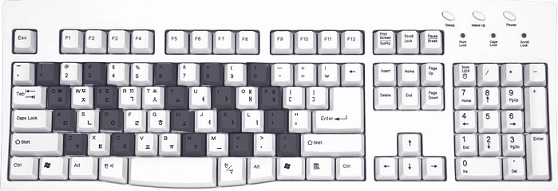

| To | Press |
| Play | Space |
| Enter Chords | Keys On Your Midi Device |
| Navigate | Arrow Keys / Home / End |
| Save Song | Ctrl-S |
| Open Song | Ctrl-O |
| Save Song As .mid File | Ctrl-E |
| Open .mid File | Ctrl-I |
| Select Next Note | Shift |
| Add Pause |
Pause Break |
| Change Note In Chord (If Not Selected - Change Whole Chord) |
|---|
| Increase Note Length Twice |
[ or + |
| Decrease Note Length Twice |
] or - |
| Put Dot / Undo Triplet |
. or * |
| Remove Dot / Make Triplet |
, or / |
| Delete Note | Delete / Backspace |
| Change Note Channel (Use Preset Table To Assign Other Instruments Than Piano To Channel Numbers) |
Numbers 0..9 On Numpad |
| Append New Note To Chord |
Key On Midi Device (Works When Any Note In Chord Is Selected) |
Note: may be outdated. For most recent key mapping see
Handler.ts::focusedHandlers